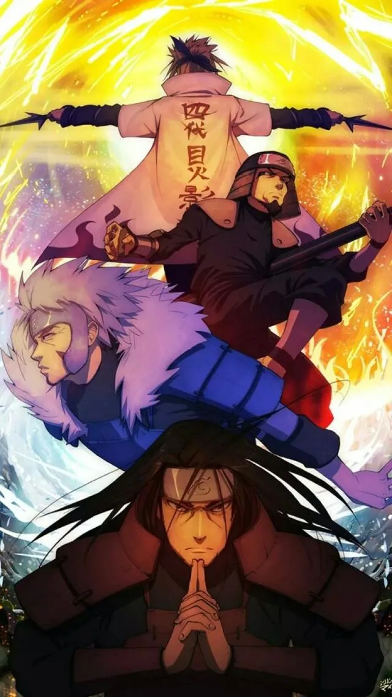
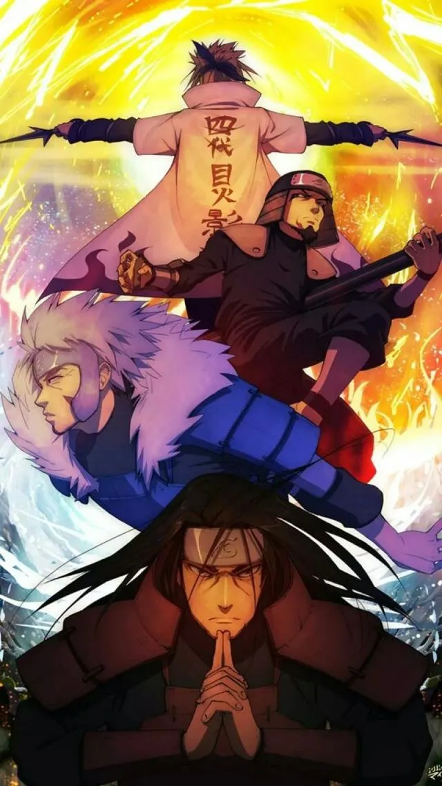

🔥 少年热血类动漫
《海贼王》（ONE PIECE）
尾田荣一郎创作的经典长篇动漫，讲述了路飞为成为海贼王，与伙伴们踏上伟大航路的冒险故事。作品以热血的战斗、深厚的友情、宏大的世界观著称，连载20余年仍稳居人气榜首，核心主题是“自由”与“梦想”。
《火影忍者》（NARUTO）
岸本齐史的代表作，围绕漩涡鸣人追求“火影”梦想、拯救同伴的故事展开。涵盖了忍术、羁绊、成长等核心元素，从少年篇到疾风传，塑造了鸣人、佐助、卡卡西等经典角色，“永不放弃”的精神打动无数观众。
尾田荣一郎创作的经典长篇动漫，讲述了路飞为成为海贼王，与伙伴们踏上伟大航路的冒险故事。作品以热血的战斗、深厚的友情、宏大的世界观著称，连载20余年仍稳居人气榜首，核心主题是“自由”与“梦想”。
岸本齐史的代表作，围绕漩涡鸣人追求“火影”梦想、拯救同伴的故事展开。涵盖了忍术、羁绊、成长等核心元素，从少年篇到疾风传，塑造了鸣人、佐助、卡卡西等经典角色，“永不放弃”的精神打动无数观众。